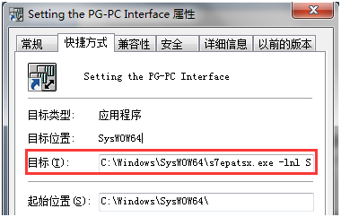

1.先谈下S7协议
S7协议是西门子自动化系统核心通讯协议，独立于西门子各种通讯总线，可用于所有子网 (MPI，PROFIBUS，工业以太网)。下图是其ISO-OSI参考模型，关于S7协议详细内容，请阅读以前推送的文章《西门子S7以太网通讯协议》。
以工业以太网的S7为例，Industrial Ethernet、IP、TCP、ISO协议就是它的基础，好比盖房子，没有这些地基S7这个房子就盖不起来。
如双方进行ISO-on-TCP S7通讯时，必须先建立起TCP/IP这条路S7这辆车才能在上面跑。这个通讯双方定义为客户端和服务端，互称对方为通讯伙伴partner。如SIMATIC NET OPC SERVER、WINCC、Prodave、Applications、单边连接的主动激活端，都可看成客户端，来连接服务端如S7-PLC。
2.TCP/IP连接的建立
服务端Server监听其网络接口的IP的102端口（S7协议指定端口），客户端Client使用其选择的网络接口的IP地址和102端口建立与服务端的连接。连接过程称为“三次握手”，关于此详细内容可自行谷歌百度。
如KEPServerEX使用Siemens TCP/IP Ethernet驱动连接S7-PLC，新建通道channel时直接设置客户端使用的网络接口。
再如STEP 7 配置SIMATIC NET OPC SERVER使用ISO-on-TCP S7协议连接S7-PLC，直接选择添加OPC SERVER PC Station客户端已安装的通讯模块如“常规IE”。
并设置网卡的IP地址，用于连接服务端S7-PLC。
服务端S7-PLC，其系统自动监听CPU PN接口或CP PN接口IP地址的102端口，等待客户端连接。
那WINCC作为客户端是如何配置其IP的？以S7-1200/1500驱动为例，连接参数中“IP地址”为服务端S7-1200 PLC IP，通过选择“访问点”来调用网络接口，这“访问点”来自哪？
这时“Set PG-PC Interface”就登场了， 它用来添加/删除和配置、测试“访问点”，供应用程序如WINCC、STEP 7、Prodave来调用。
3.Set PG-PC Interface
应用程序（除了STEP7）使用哪个访问点没有规定，可以自己添加访问点，并根据通讯连接的网络类型分配对应的接口就可以了。详细内容可查看“Set PG-PC Interface”帮助。
如使用Prodave6.dll编程连接S7-PLC时，通讯连接函数LoadConnection_ex6的pAccessPoint”访问点“参数，默认使用”S7ONLINE”，也可以赋值其它的访问点。
对于STEP 7，只能使用”S7ONLINE (STEP 7)”访问点。我是这么理解的，如果你有STEP 7源代码，也可以把它改成其它访问点。
4.其它
当系统中多个软件在“开始菜单”都有“Set PG-PC Interface”启动项时，从各自“启动命令行”可看出是同一程序（如Windows7 64中路径为C:\Windows\SysWOW64\s7epatsx.exe），只不过启动时带的参数不一样。

STEP7 下启动命令行为：C:\Windows\SysWOW64\s7epatsx.exe -lnl S7ONLINE -App=STEP7，SIMATIC NET下为C:\Windows\SysWOW64\s7epatsx.exe -App=Simatic。使用参数“-lnl 访问点”可限制“Set PG-PC Interface”只能设置这一个访问点。
一般在“控制面板”中启动“Set PG-PC Interface”即可。